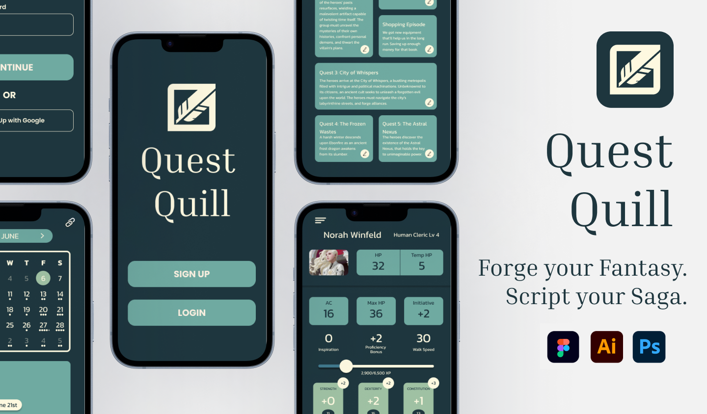
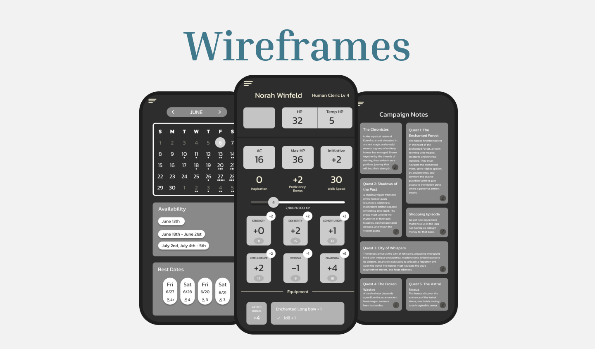
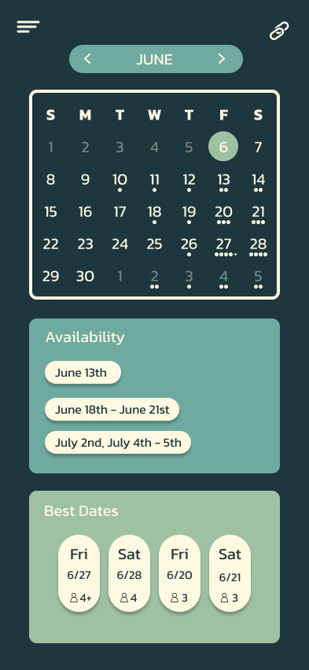
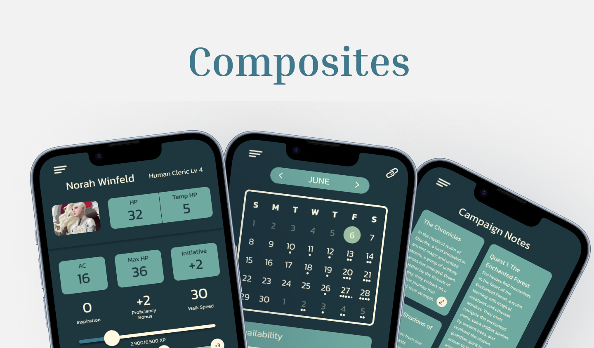
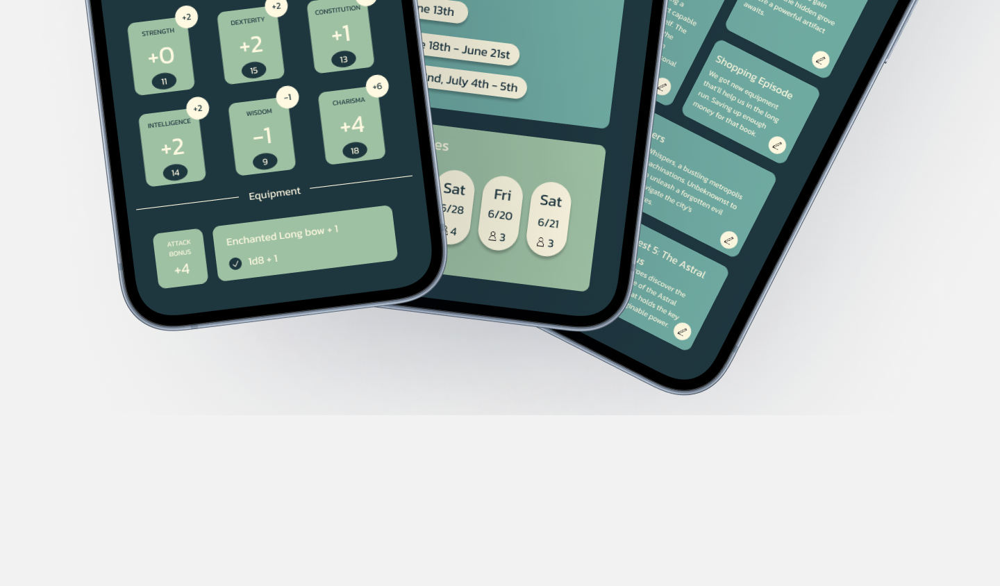
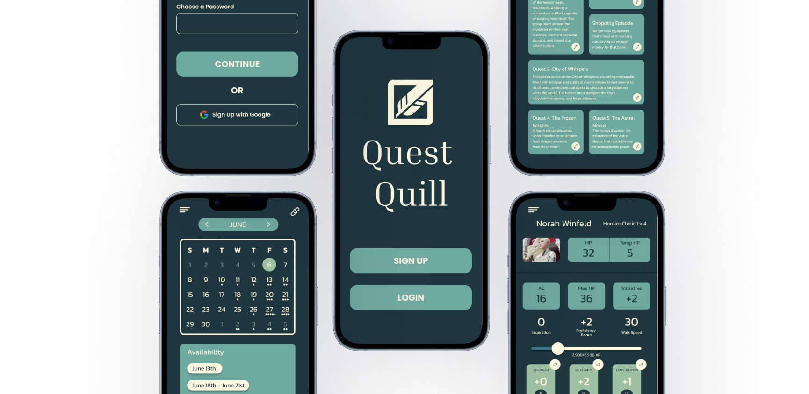
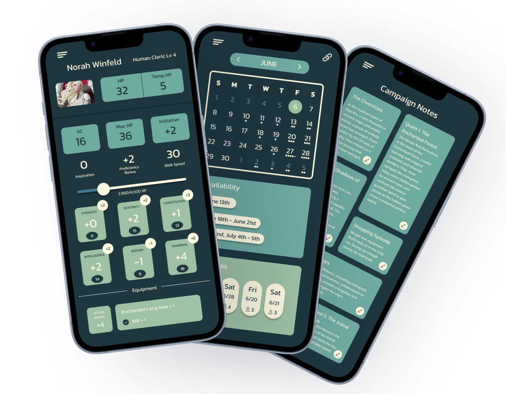
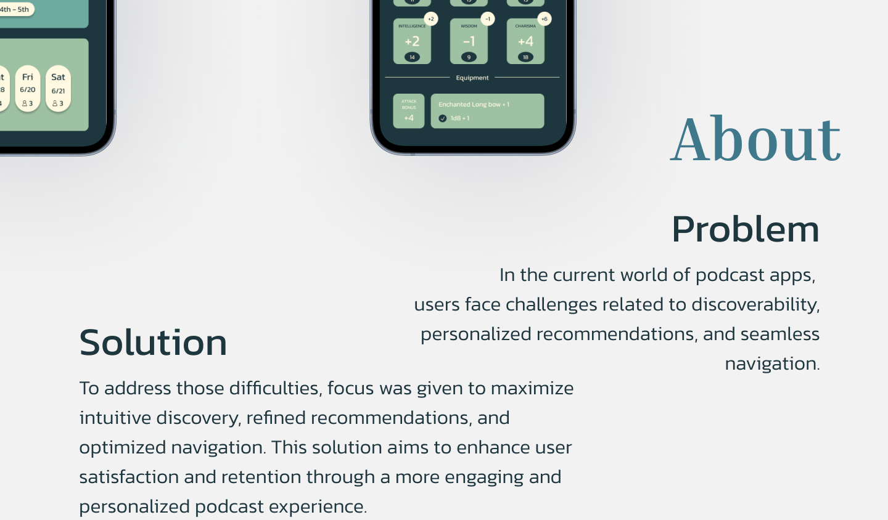

← All projects
Product Design · UI/UX
Quest QuillCampaign Companion.
A tabletop roleplaying companion concept with character creation, campaign notes, scheduling, and account flows.

Process
Organizing the adventurebefore styling it.
Wireframes and design-process work established navigation and information hierarchy.


Core screens
Characters, calendars,and campaign notes.
The final interface centers the tasks players and game masters return to most often.





Final presentation
A completecampaign system.
Composites and larger mockups show how the project scales from individual mobile screens to a broader product showcase.






